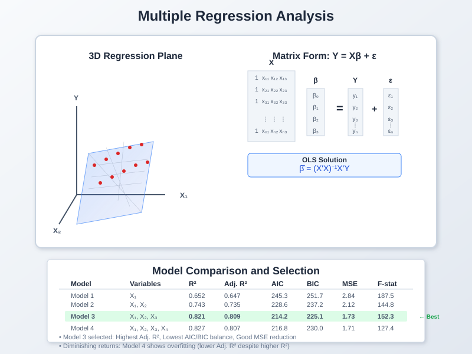
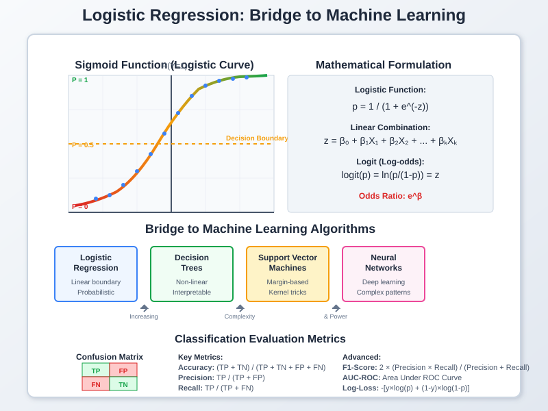
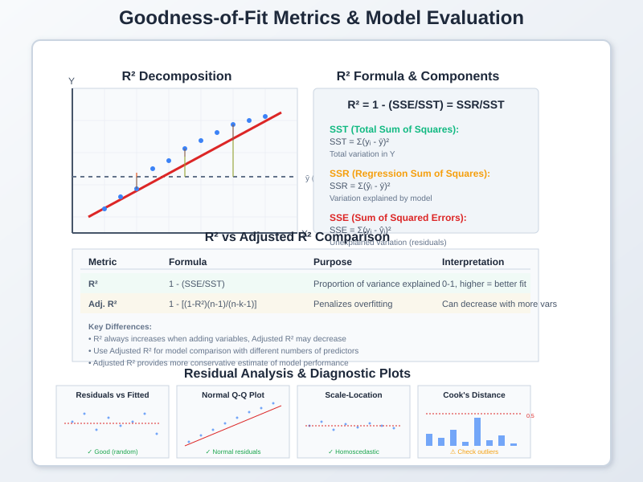

Regression & Correlation Analysis
📚 Quick Navigation
- 📊 Introduction to Regression Analysis
- 📈 Simple Linear Regression
- 🔢 Multiple Regression
- 🤖 Logistic Regression (Bridge to ML)
- 📏 Goodness-of-Fit Metrics
- 💻 Implementation & Code Examples
- 🔗 References & Further Reading
📊 Introduction to Regression Analysis
Regression analysis is a fundamental statistical technique used to model and analyze the relationship between variables. It serves as a bridge between traditional statistics and modern machine learning, providing both interpretable insights and predictive capabilities.
Core Objectives:
- Relationship Modeling: Quantify how changes in independent variables affect the dependent variable
- Prediction: Forecast future values based on observed patterns
- Inference: Test hypotheses about variable relationships
- Feature Selection: Identify the most influential variables in a system
Types of Regression Analysis:
- Linear Regression: Models linear relationships between variables
- Multiple Regression: Extends linear regression to multiple predictors
- Logistic Regression: Models binary or categorical outcomes
- Polynomial Regression: Captures non-linear relationships using polynomial terms
📈 Simple Linear Regression
Simple linear regression models the relationship between two continuous variables: one independent variable (X) and one dependent variable (Y).

Mathematical Foundation:
The simple linear regression model is expressed as:
Y = β₀ + β₁X + ε
Where:
- Y: Dependent variable (response variable)
- X: Independent variable (predictor variable)
- β₀: Y-intercept (value of Y when X = 0)
- β₁: Slope coefficient (change in Y for unit change in X)
- ε: Error term (random variation not explained by the model)
Parameter Estimation using Ordinary Least Squares (OLS):
β₁ = Σ[(xᵢ - x̄)(yᵢ - ȳ)] / Σ[(xᵢ - x̄)²]
β₀ = ȳ - β₁x̄
Key Assumptions:
- Linearity: The relationship between X and Y is linear
- Independence: Observations are independent of each other
- Homoscedasticity: Constant variance of residuals
- Normality: Residuals are normally distributed
- No Outliers: Extreme values don't disproportionately influence the model
Model Interpretation:
- Slope (β₁): For every one-unit increase in X, Y increases by β₁ units
- Intercept (β₀): Expected value of Y when X equals zero
- R-squared: Proportion of variance in Y explained by X
Practical Applications:
- Sales Forecasting: Predict sales based on advertising spend
- Medical Research: Analyze drug dosage effects on patient outcomes
- Economics: Model relationship between education and income
- Engineering: Predict material strength based on temperature
🔢 Multiple Regression
Multiple regression extends simple linear regression to include multiple independent variables, allowing for more comprehensive modeling of complex relationships.

Mathematical Model:
Y = β₀ + β₁X₁ + β₂X₂ + ... + βₖXₖ + ε
Where:
- Y: Dependent variable
- X₁, X₂, ..., Xₖ: Independent variables (k predictors)
- β₀: Intercept term
- β₁, β₂, ..., βₖ: Regression coefficients
- ε: Error term
Matrix Representation:
Y = Xβ + ε
Parameter Estimation:
β̂ = (X'X)⁻¹X'Y
Advanced Considerations:
Multicollinearity:
- Definition: High correlation between independent variables
- Detection: Variance Inflation Factor (VIF) > 10
- Solutions: Ridge regression, variable selection, principal component analysis
Variable Selection Methods:
- Forward Selection: Start with no variables, add variables that improve the model
- Backward Elimination: Start with all variables, remove non-significant ones
- Stepwise Selection: Combination of forward and backward methods
- Regularization: LASSO (L1) and Ridge (L2) regression
Model Validation Techniques:
- Cross-Validation: Split data into training and testing sets
- Hold-Out Validation: Reserve portion of data for final model evaluation
- Bootstrap Sampling: Resample with replacement to assess model stability
Interaction Effects:
Y = β₀ + β₁X₁ + β₂X₂ + β₃(X₁ × X₂) + ε
Practical Applications:
- Real Estate: Predict house prices using size, location, age, amenities
- Marketing: Model customer satisfaction using product features
- Healthcare: Analyze treatment outcomes using multiple patient characteristics
- Finance: Risk assessment using multiple economic indicators
🤖 Logistic Regression (Bridge to ML)
Logistic regression extends linear regression to binary and categorical outcomes, serving as a fundamental bridge between traditional statistics and machine learning classification algorithms.

Mathematical Foundation:
Logistic Function (Sigmoid):
p = 1 / (1 + e^(-(β₀ + β₁X₁ + β₂X₂ + ... + βₖXₖ)))
Logit Transformation:
logit(p) = ln(p/(1-p)) = β₀ + β₁X₁ + β₂X₂ + ... + βₖXₖ
Where:
- p: Probability of success (outcome = 1)
- logit(p): Log-odds ratio
- β coefficients: Effect of each variable on log-odds
Maximum Likelihood Estimation:
Unlike OLS in linear regression, logistic regression uses maximum likelihood estimation:
L(β) = Π[pᵢʸⁱ(1-pᵢ)¹⁻ʸⁱ]
Types of Logistic Regression:
Binary Logistic Regression:
- Outcome: Two categories (success/failure, yes/no)
- Example: Email spam detection, medical diagnosis
Multinomial Logistic Regression:
- Outcome: Multiple unordered categories
- Example: Brand preference, political party choice
Ordinal Logistic Regression:
- Outcome: Multiple ordered categories
- Example: Customer satisfaction ratings, education level
Bridge to Machine Learning:
Classification Algorithms Comparison:
- Logistic Regression: Linear decision boundary, probabilistic output
- Decision Trees: Non-linear boundaries, interpretable rules
- Support Vector Machines: Optimal separating hyperplane
- Neural Networks: Complex non-linear relationships
- Random Forest: Ensemble of decision trees
Feature Engineering for ML:
- Polynomial Features: Create interaction terms
- Standardization: Scale features for algorithms sensitive to magnitude
- Categorical Encoding: One-hot encoding, label encoding
- Feature Selection: Remove irrelevant or redundant features
Model Evaluation Metrics:
- Accuracy: Proportion of correct predictions
- Precision: True positives / (True positives + False positives)
- Recall: True positives / (True positives + False negatives)
- F1-Score: Harmonic mean of precision and recall
- AUC-ROC: Area under the receiver operating characteristic curve
Practical Applications:
- Medical Diagnosis: Predict disease probability based on symptoms
- Marketing: Customer churn prediction and targeting
- Finance: Credit approval and fraud detection
- Technology: Recommendation systems and user behavior analysis
📏 Goodness-of-Fit Metrics
Goodness-of-fit metrics evaluate how well a regression model explains the observed data and help compare different models.

R-squared (Coefficient of Determination):
R² = 1 - (SSE/SST) = (SSR/SST)
Where:
- SSE: Sum of Squared Errors (residual sum of squares)
- SST: Total Sum of Squares
- SSR: Sum of Squares due to Regression
Components Breakdown:
SST = Σ(yᵢ - ȳ)² (Total variation)
SSE = Σ(yᵢ - ŷᵢ)² (Unexplained variation)
SSR = Σ(ŷᵢ - ȳ)² (Explained variation)
R-squared Interpretation:
- Range: 0 to 1 (0% to 100%)
- 0.0: Model explains no variance
- 1.0: Model explains all variance
- Typical Values: 0.7+ considered good in many fields
Adjusted R-squared:
R²ₐₐⱼ = 1 - [(1-R²)(n-1)/(n-k-1)]
Where:
- n: Number of observations
- k: Number of independent variables
Advantages of Adjusted R²:
- Penalizes Overfitting: Accounts for number of variables
- Model Comparison: Better for comparing models with different variable counts
- Prevents Inflation: R² always increases with added variables, adjusted R² may decrease
Residual Analysis:
Types of Residuals:
- Raw Residuals: eᵢ = yᵢ - ŷᵢ
- Standardized Residuals: eᵢ/√MSE
- Studentized Residuals: Account for leverage of each observation
Residual Diagnostic Plots:
- Residuals vs Fitted: Check for homoscedasticity and linearity
- Normal Q-Q Plot: Assess normality assumption
- Scale-Location Plot: Examine homoscedasticity
- Cook's Distance: Identify influential observations
Advanced Goodness-of-Fit Measures:
Information Criteria:
AIC = n·ln(SSE/n) + 2k
BIC = n·ln(SSE/n) + k·ln(n)
Model Selection Guidelines:
- Lower AIC/BIC: Better model fit
- AIC: Good for prediction
- BIC: Good for explanation (penalizes complexity more)
Cross-Validation Metrics:
- Leave-One-Out CV: Use n-1 observations for training, 1 for validation
- K-Fold CV: Split data into k folds, rotate training/validation
- Mean Squared Error (MSE): Average squared prediction errors
- Mean Absolute Error (MAE): Average absolute prediction errors
For Logistic Regression:
Pseudo R-squared Measures:
- McFadden's R²: 1 - (LogL₁/LogL₀)
- Cox & Snell R²: 1 - (L₀/L₁)^(2/n)
- Nagelkerke R²: Adjusted Cox & Snell to range 0-1
Classification Metrics:
- Confusion Matrix: True/False Positives and Negatives
- ROC Curve: True Positive Rate vs False Positive Rate
- Precision-Recall Curve: Precision vs Recall trade-off
Model Comparison Framework:
- Statistical Significance: F-tests for nested models
- Practical Significance: Effect sizes and confidence intervals
- Predictive Performance: Out-of-sample validation
- Model Complexity: Balance between fit and simplicity
💻 Implementation & Code Examples
Google Colab Integration:

Python Implementation Examples:
Simple Linear Regression with scikit-learn:
import numpy as np
import pandas as pd
import matplotlib.pyplot as plt
from sklearn.linear_model import LinearRegression
from sklearn.metrics import r2_score, mean_squared_error
import seaborn as sns
# Generate sample data
np.random.seed(42)
X = np.random.randn(100, 1)
y = 2 + 3 * X.ravel() + np.random.randn(100) * 0.5
# Fit the model
model = LinearRegression()
model.fit(X, y)
# Make predictions
y_pred = model.predict(X)
# Calculate metrics
r2 = r2_score(y, y_pred)
mse = mean_squared_error(y, y_pred)
print(f"R-squared: {r2:.4f}")
print(f"MSE: {mse:.4f}")
print(f"Intercept: {model.intercept_:.4f}")
print(f"Slope: {model.coef_[0]:.4f}")
Multiple Regression with Feature Selection:
from sklearn.feature_selection import RFE
from sklearn.preprocessing import StandardScaler
# Load data (example with Boston housing dataset)
from sklearn.datasets import load_boston
X, y = load_boston(return_X_y=True)
# Standardize features
scaler = StandardScaler()
X_scaled = scaler.fit_transform(X)
# Recursive Feature Elimination
selector = RFE(LinearRegression(), n_features_to_select=5)
X_selected = selector.fit_transform(X_scaled, y)
# Fit model with selected features
model = LinearRegression()
model.fit(X_selected, y)
Logistic Regression for Classification:
from sklearn.linear_model import LogisticRegression
from sklearn.model_selection import train_test_split
from sklearn.metrics import classification_report, roc_auc_score
# Example with binary classification
from sklearn.datasets import make_classification
X, y = make_classification(n_samples=1000, n_features=10, random_state=42)
# Split data
X_train, X_test, y_train, y_test = train_test_split(X, y, test_size=0.2, random_state=42)
# Fit logistic regression
log_reg = LogisticRegression()
log_reg.fit(X_train, y_train)
# Predictions
y_pred = log_reg.predict(X_test)
y_prob = log_reg.predict_proba(X_test)[:, 1]
# Evaluation
print(classification_report(y_test, y_pred))
print(f"AUC-ROC: {roc_auc_score(y_test, y_prob):.4f}")
Residual Analysis and Diagnostics:
import scipy.stats as stats
def residual_analysis(model, X, y):
"""Comprehensive residual analysis for linear regression"""
# Calculate residuals
y_pred = model.predict(X)
residuals = y - y_pred
# Create diagnostic plots
fig, axes = plt.subplots(2, 2, figsize=(12, 10))
# Residuals vs Fitted
axes[0, 0].scatter(y_pred, residuals)
axes[0, 0].axhline(y=0, color='r', linestyle='--')
axes[0, 0].set_xlabel('Fitted Values')
axes[0, 0].set_ylabel('Residuals')
axes[0, 0].set_title('Residuals vs Fitted')
# Normal Q-Q plot
stats.probplot(residuals, dist="norm", plot=axes[0, 1])
axes[0, 1].set_title('Normal Q-Q Plot')
# Scale-Location plot
standardized_residuals = residuals / np.std(residuals)
axes[1, 0].scatter(y_pred, np.sqrt(np.abs(standardized_residuals)))
axes[1, 0].set_xlabel('Fitted Values')
axes[1, 0].set_ylabel('√|Standardized Residuals|')
axes[1, 0].set_title('Scale-Location Plot')
# Histogram of residuals
axes[1, 1].hist(residuals, bins=20, edgecolor='black', alpha=0.7)
axes[1, 1].set_xlabel('Residuals')
axes[1, 1].set_ylabel('Frequency')
axes[1, 1].set_title('Distribution of Residuals')
plt.tight_layout()
plt.show()
return residuals
Hugging Face Integration:
Pre-trained Models for Regression Tasks:
- Regression Transformers: Pre-trained models for tabular regression
- AutoML Models: Automated machine learning for regression
- Time Series Models: Forecasting models
Model Comparison Framework:
from sklearn.ensemble import RandomForestRegressor
from sklearn.svm import SVR
from sklearn.model_selection import cross_val_score
models = {
'Linear Regression': LinearRegression(),
'Random Forest': RandomForestRegressor(random_state=42),
'Support Vector Regression': SVR()
}
results = {}
for name, model in models.items():
scores = cross_val_score(model, X_train, y_train, cv=5, scoring='r2')
results[name] = {
'mean_r2': scores.mean(),
'std_r2': scores.std()
}
print(f"{name}: R² = {scores.mean():.4f} (+/- {scores.std() * 2:.4f})")
🔗 References & Further Reading
📚 Essential Textbooks:
- "Introduction to Statistical Learning" by James, Witten, Hastie, and Tibshirani - Comprehensive coverage of regression methods with R examples
- "Applied Regression Analysis" by Kutner, Nachtsheim, Neter, and Li - Detailed mathematical treatment of regression analysis
- "The Elements of Statistical Learning" by Hastie, Tibshirani, and Friedman - Advanced statistical learning theory
📄 Key Research Papers:
- Gauss-Markov Theorem - Foundational theorem for linear regression optimality
- Ridge Regression: Biased Estimation - Hoerl & Kennard's seminal work on regularization
- LASSO Regression - Tibshirani's introduction to L1 regularization
🌐 Online Resources:
- Coursera: Machine Learning Course - Andrew Ng's comprehensive ML course including regression
- Khan Academy Statistics - Free statistical concepts and regression basics
- Towards Data Science - Medium publication with practical regression tutorials
🛠️ Software & Tools:
- scikit-learn Documentation - Comprehensive regression implementations in Python
- R Statistical Software - Statistical computing environment with extensive regression packages
- Statsmodels - Python library for statistical modeling and econometrics
🎓 Advanced Topics:
- Bayesian Regression: Incorporate prior knowledge and uncertainty quantification
- Non-parametric Regression: Kernel methods and spline regression
- Time Series Regression: Autoregressive models and dynamic regression
- Robust Regression: Methods resistant to outliers and violations of assumptions